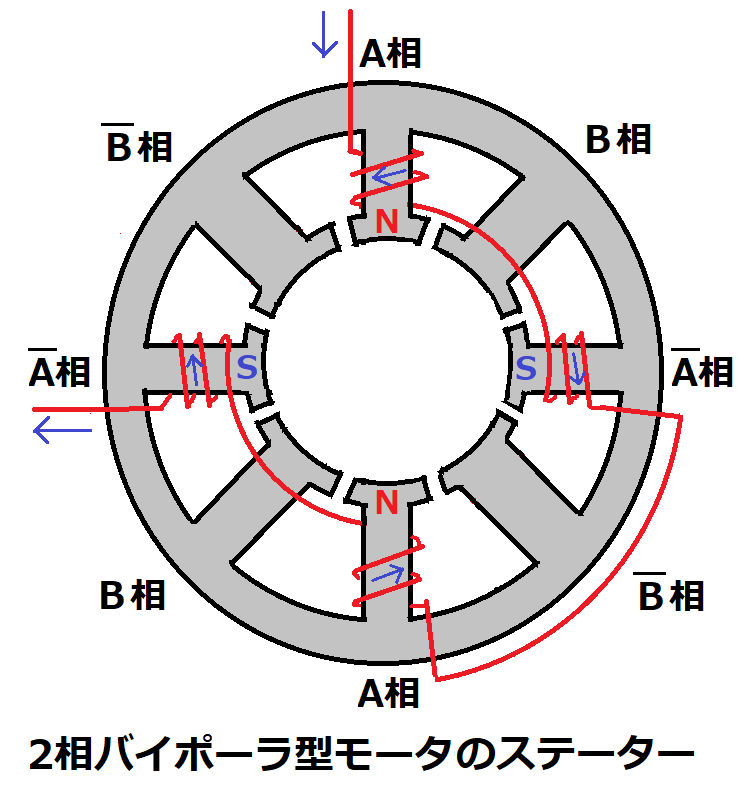
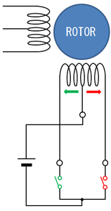
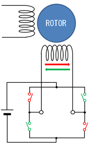
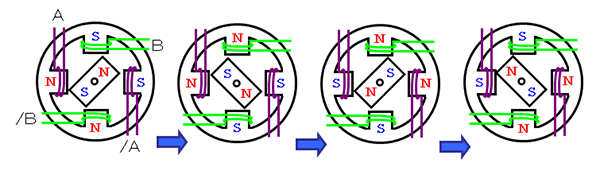

ステッピングモーター
制御が細かくできて便利
分類
駆動に用いられるコイルの数、巻線構造により分けられる。
相数ではじめに分けられ更にコイルの回路方式で分けられる。
ステッピングモータとは？ 仕組み，種類，使い方（駆動方式・制御方法），メリットや特徴より
相数
用いられているコイルのセットの数。2,3,5のいずれかである(特殊なやつは除く)。
2相
電子工作などで一番用いられる。ステッピングモーターの選定では一番にこれが候補に上がる。

コイルの回路方式により2つに分けられる。それぞれで回路が異なるためドライバも異なる。同じユニポーラ(バイポーラ)モータであれば異なる製品にもドライバの使い回しができることが多い。
ユニポーラ・バイポーラ
ユニポーラ {uni(1つの)polar(極性) }

バイポーラ

3相
スター結線によるモータ。異なる製品にも同じドライバを使えることが多い。
5相
巻線構造が複雑であるためドライバの互換性が低い。モータとドライバの組み合わせには注意。
仕組み

基本は上図のようにモーター本体の中心の磁石に対して周辺の電磁石の極性を変化させることで回転させる。それぞれの磁力を電流の値を変化せることで基本のステップ角度よりも細かく制御することができる。
ステップ
ステッピングモーターが一回転を何段階に分けられるかをステップ数と呼ぶ。
ステップ分解能= 360/ステップ数
例えば200ステップ数のモーターは1.8度ごとに動くことができる。これをステップ分解能といい、ステップ角と呼ぶこともある。
マイクロステップ
電流の値を微妙に変化させることでステップ角よりも細かく制御することができる。
例えばマイクロステップ128のモードであれば一つのステップを128等分するので1ステップが1.8度から1.8/128度になりかなり精密な制御が可能になる。
ただしステップ角を小さくしすぎると保持トルクが落ちて精度が落ちる、その角度での停止ができなくなるため一般的にはステップ角の1/16までにする。
製品
Nema17
Nema 17 ステッピングモーターとは何ですか?- ステッピングモーター販売|Skysmotor.comより
ステッピングモーターとして一番使われているてあろうタイプ。モーター取り付け全面のサイズが1.7インチ×1.7インチ(43mm)である。同様にNema23,34などがある。取り付け面の寸法はほとんど共通でM4ネジ4つでの固定。軸方向の長さは様々であり基本的に長いほどトルクが大きくなる。
一般的にステップ角は0.9°または1.8°。1.8°が多く一回転200ステップ。
ユニポーラ、バイポーラの両方がある。バイポーラのほうが多い。
ドライバー
L6470ドライブキット
2相バイポーラ用のドライブキット。
電子工作範囲でモータ制御に欲しい機能は大体ある。
このドライバーの注意点としてレジスタマップを読み取りたい場合にSPI通信のチップセレクトピンを一回切ってまたつなぐ作業をしないと正しくデータが返ってこない。参考→シリアル通信 ==これはTinkerboardのみの現象みたい。==RaspberryPiだとチップセレクトを切らずにそのままでも正しくデータが返ってくる